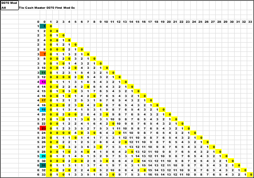
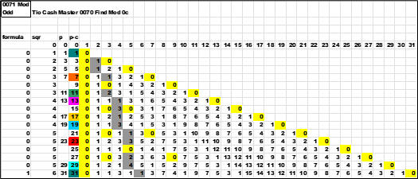

Looking at all numbers and focusing on the *wildcard (*1 , *3 , *7 , *9) to create *fam ( *fam01 , *fam07 , *fam11 , *fam13 , *fam17 , *fam19 , *fam23 , and *fam29 ) a clear pattern of all numbers can be derived.
By using the MOD() function we can look for factors easily. Where MOD(PS,1) =30 and conditionally painting the cell yellow. Non-prime numbers can be easily seen and sorted off.
Mod() with only odd numbers in column p. Column p-c is a painted color of prime numbers.
Sorting off all the even numbers and leaving just the odd numbers will create this chart.
Same list but the integer value of the square root of the ODD column is listed.
Right side of square root is redundant. Before I get too far ahead of myself , the right side of the square root can be eliminated. It is just the inverse of the left side. An example is (7 x 11) the same as (11 x 7). They are mirror images on both sides of the square root.

2 And 5 Are Out
At this point let ''s look at 2 (two) and 5 (five).
>Both of these number are each a one shot ; they only occur once as the least significant digit. It is extraneous data , sort them out.
Two (2) is the only even number prime number. All subsequent even numbers are just a multiple of two (2). There will never be any number that is *2 greater than 2 that can be prime.
Five (5) is the same as two (2) there is only one prime that will end with a five. All the rest are multiples of five (5). There will never be any number that is *5 greater than five (5) that can be prime.
Remember *wildcard numbers.
How And Why Can We Discard Numbers?
In the real world we make all kinds of different sorts for different data ; different rules ; for all kinds of different situations.
The first that comes to mind is the old MS-DOS "dir" command. We could sort files with "dir a*.com" - give me a list of all files that starts with "a" , and are any length or values and have a ".com" extension.
Next , in a TSO Mainframe File Edit , is a command like "sort 12 15 a 23 34 d 16 18 a" - sort columns 12 to 15 ascending , and then 23 to 34 descending , and finally 16 to 18 ascending.